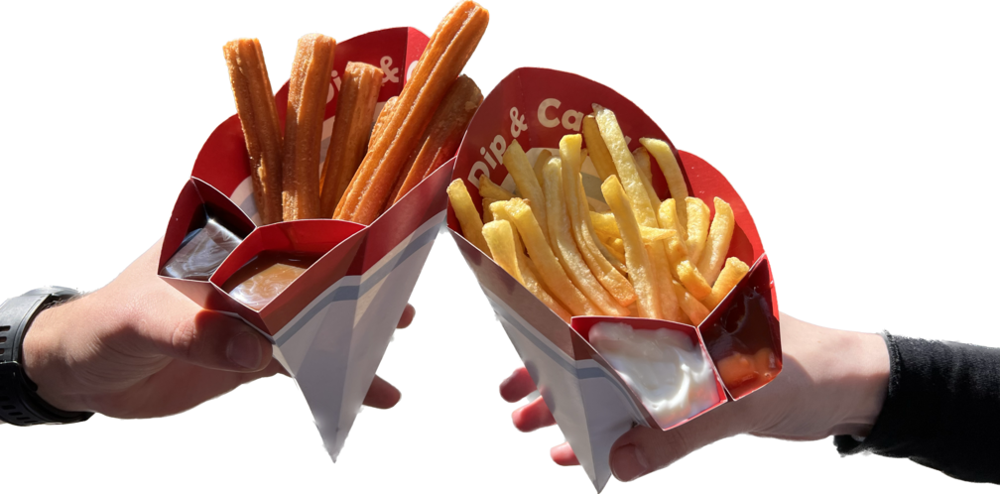
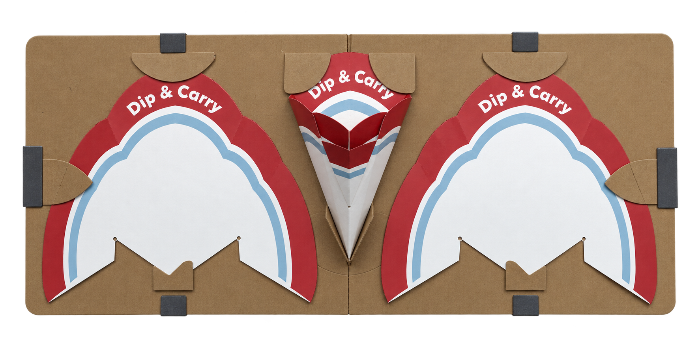

A single-piece fast-food package that brings food and two sauces together for easier carrying, dipping and eating.

Takeaway food and sauces are often handed over as separate packages, making them awkward to carry and use together. Dip & Carry combines a main food compartment with two integrated sauce compartments in a single paper package, keeping everything together from counter to consumption.
The two smaller compartments allow two sauces to be served alongside fries, churros or similar finger foods, with proportions that allow the food to be dipped directly into the package.
Paper mock-ups were used to refine the folding sequence and the proportions of the three compartments. The package is cut from one piece and closed with a few glued connections, so it stays flat until it is needed.
Packages are stored and shipped as a stack of flat blanks. At the counter one is taken from the stack, folded into shape, filled with a serving and two sauces, and handed straight to the customer.

Dip & Carry brings the food and two sauce portions into one compact package. It can be carried while eating on the go or placed directly on a table, while the integrated sauce compartments remain accessible for dipping.
Integrating the sauce compartments also removes the need for two separate sauce cups, reducing the number of individual packaging components required for each serving.